Subviews
Subviews (also referred to as windows, widgets, or simply views) are an essential part of working with IDA, providing different perspectives and detailed information about the loaded binary.
Subviews essentials
- Some subviews are opened by default, while others can be accessed at any time via View → Open subviews.
- Certain subviews, (known as choosers) are list views, that allow you to interact with and manipulate their contents using list viewer commands.
- All subviews windows can be moved, rearranged and docked in various parts of the IDA interface.
The following is a list of all available subviews.
| Icon | View | Access Mode | Shortcut |
|---|---|---|---|
| Disassembly/IDA View | Interactive (r/w), address-based | - | |
| Pseudocode | Interactive (r/w), address-based | F5 | |
| Hex View | Interactive (r/w), address-based | - | |
| Address details | Read-only chooser | - | |
| Exports | Read-only chooser | - | |
| Imports | Read-only chooser | - | |
| Names | Read-only chooser | Shift + F4 | |
| Functions | Read-only chooser | Shift + F3 | |
| Strings | Read-only chooser | Shift + F12 | |
| Stack Variables | Interactive (r/w) | Ctrl + K | |
| Segments | Interactive (r/w) | Shift + F7 | |
| Segments Registers | Interactive (r/w) | Shift + F8 | |
| Selectors | Interactive (r/w) | - | |
| Signatures | Interactive (r/w) | Shift + F5 | |
| Type libraries | Interactive (r/w) | Shift + F11 | |
| Local Types | Interactive (r/w) | Shift + F1 | |
| Cross References | Interactive (r/w) | - | |
| Cross References Tree | Interactive (r/w) | Shift + X | |
| Function calls | Read-only chooser | - | |
| Bookmarks | Interactive (r/w) | Ctrl + Shift + M | |
| Notepad | Interactive (r/w) | - | |
| Problems | Read-only chooser | - | |
| Patched bytes | Read-only chooser | Ctrl + Option + P | |
| N/A | Navigation history | Read-only chooser | - |
| Undo history | Read-only chooser | - | |
| Microcode | Interactive | Ctrl + Shift + F8 |
IDA View / Disassembly window
{% hint style=“info” %} While working in the IDA/Disassembly view, the actions available under the Edit, Jump and Search menus may differ from those in other views. For more information, see View-Dependent Menus. {% endhint %}
IDA View has three modes:
- Flat/linear mode (1)
- Graph mode (2)
- Proximity mode (3)
IDA automatically opens one disassembly window (IDA view) at the start. If the current location is an instruction belonging to a function, then the graph view is available. You can toggle between the flat and graph view using the Space key. You can also switch to proximity view by zooming out to the callgraph using the - key.

Arrows on the left side of the flat mode represents the control flow. The IDA UI highlights the current identifier.
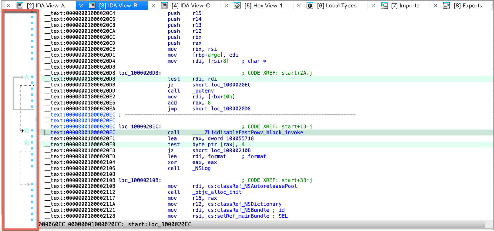
{% hint style=“info” %}
Synchronized views
By default, the IDA View and Hex View are synchronized. Navigating in one of these views automatically updates the cursor position in the others. You can disable/enable this behavior via the context menu by selecting Synchronize with. It’s worth mentioning that any address-based view (including IDA View, Pseudocode, or Hex View) can be synchronized with another. For more information on view synchronization, see Igor’s Tip of the Week on synchronized views. {% endhint %}
Arrows window
There is a small window with arrows on the left of the disassembly. These arrows represent the execution flow, namely the branch and jump instructions. The arrow color can be:
- red: means that the arrow source and destination do not belong to the same function. Usually, the branches are within functions and the red color will conspicuously represent branches from or to different functions.
- black: the currently selected arrow. The selection is made by moving to the beginning or the end of the arrow using the Up or Down keys or left-clicking on the arrow start or the arrow end. The selection is not changed by pressing the PageUp, PageDown, Home, End keys or using the scrollbar. This allows to trace the selected arrow far away.
- grey: all other arrows
The arrow thickness can be:
- thick: a backward arrow. Backward arrows usually represent loops. Thick arrows represent the loops in a clear and notable manner.
- thin: forward arrows.
Finally, the arrows can be solid or dotted:
- the dotted arrows represent conditional branches,
- the solid arrows represent unconditional branches.
You can resize the arrows window using a vertical splitter or even fully hide it. If it is hidden, the arrows window will not be visible on the screen but you can reveal it by dragging the splitter to the right. IDA remembers the current arrow window size in the registry when you close the disassembly window.
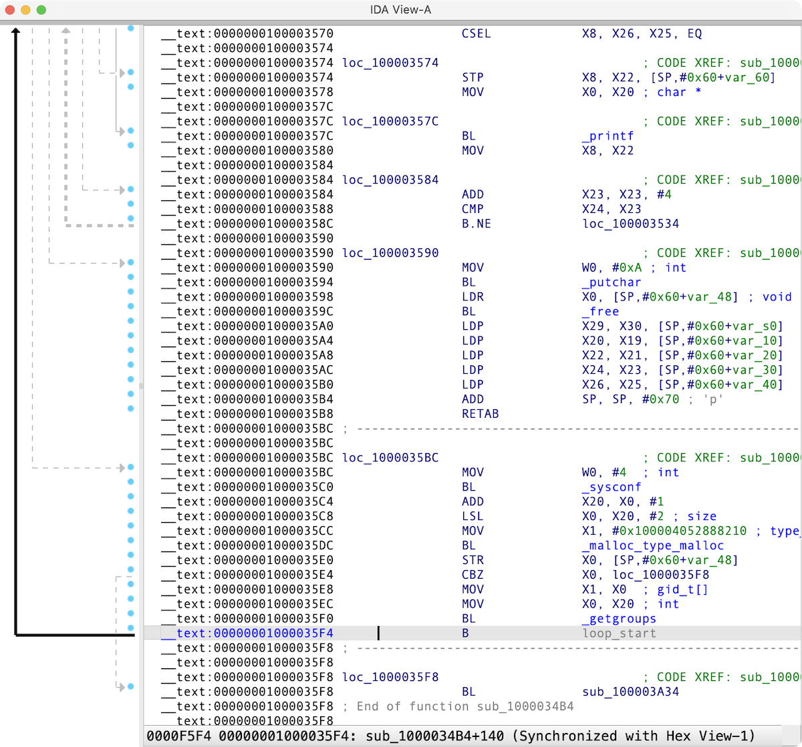
Refine the disassembly results
Use the disassembly editing commands to improve the listing.
Set the anchor
Use Shift + ↑ ↓ → ← or Alt + L to drop the anchor. If you have a mouse, you can drop the anchor with it too.
A double click of the mouse is equivalent to the Enter key.
Set disassembler options
Go to the Options → General → Disassembly to customize what information is displayed in the disassembly window.
Pseudocode window
{% hint style=“info” %} While working in the Pseudocode view, the actions available under the Edit, Jump and Search menus may differ from those in other views. For more information, see View-Dependent Menus. {% endhint %}
The Pseudocode view shows the assembly language translated into human-readable, C-like pseudocode. You can decompile the current function by F5 shortcut, and navigate between IDA disassembly and pseudocode with Tab.
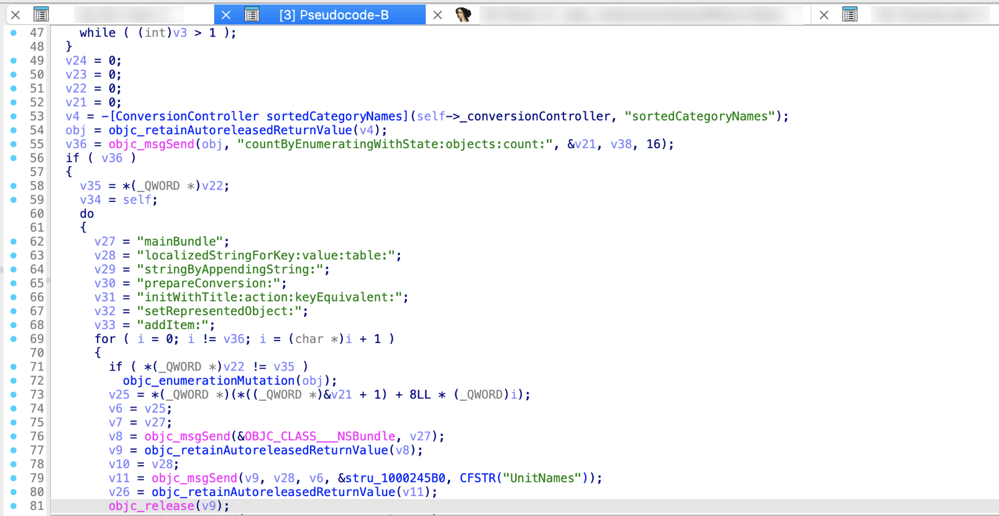
Hex View / Hex dump window
{% hint style=“info” %} While working in the Hex view, the actions available under the Edit, Jump and Search menus may differ from those in other views. For more information, see View-Dependent Menus. {% endhint %}
Hex View shows the raw bytes of the program’s instructions or data.
There are two ways of highlighting the data in the Hex Dump:
- Text match highlight, which shows matches of the selected text anywhere in the views
- Current item highlight, which shows the bytes group constituting the current item
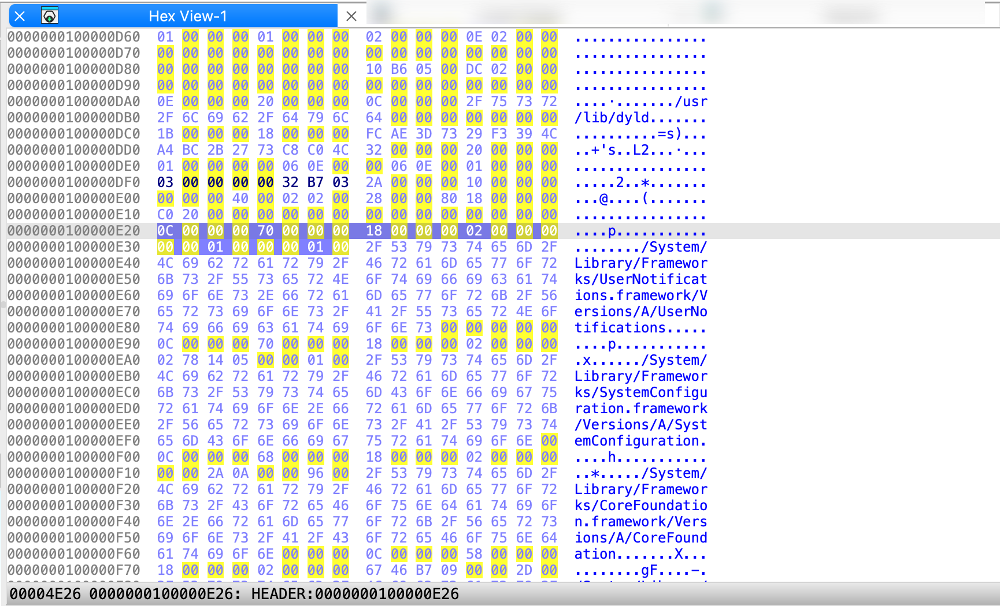
Related topics
- Learn the Hex View features and tricks
- Change Hex View encoding
Address details window
The Address details view displays detailed information about the current address selected in the IDA View, Hex View, or Pseudocode window. It updates automatically as you change location. By default, it opens on the right side of the main IDA window and consist of the below sections:
- Name assigned to address; allows you to rename location (1)
- Flags displays low-level details associated with the address, alternatively to print internal flags action (2)
- Data inspector displays how the bytes at the current address can be interpreted in different formats (3)
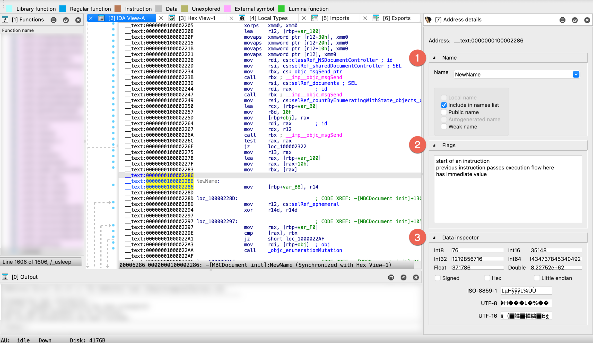
Exports window
This view shows list of all exported symbols. The columns display the following information:
- Name of the exported symbol
- Address of the exported symbol inside the analyzed program
- Ordinal of the exported symbol
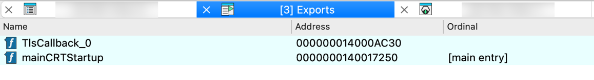
You can use list viewer commands in this window.
Imports window
This view shows list of all symbols imported through dynamic linking. The columns display the following information:
- Address of the imported symbol (located in virtual imports segment)
- Ordinal of the imported symbol
- Name of the imported symbol
- Shared Library name from which the symbol is imported
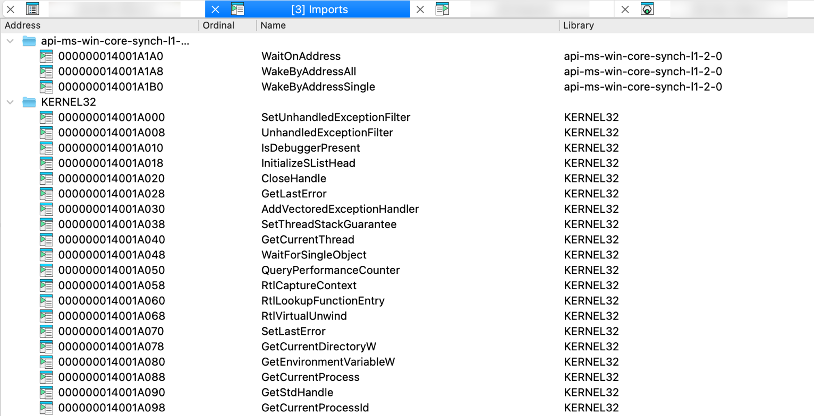
You can use list viewer commands in this window.
Functions window
{% hint style=“info” %} While working in the Functions view, the actions available under the Edit, Jump and Search menus may differ from those in other views. For more information, see View-Dependent Menus. {% endhint %}
This view presents all functions in the program. Functions view is a part of IDA’s default desktop layout and displays on the left side of the screen. You can add, delete, modify functions using list viewer commands.
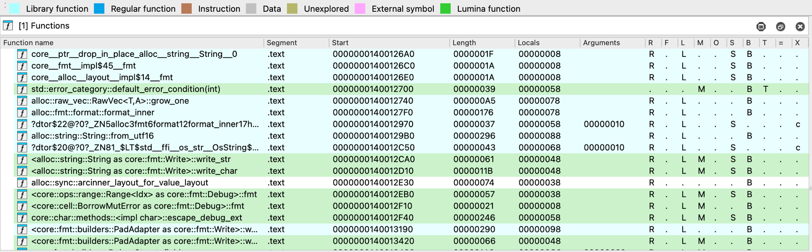
Each function entry includes the following details:
- Function name
- Segment that contains the function
- Function Start address
- Function Length in bytes
- size (in bytes) of Locals + saved registers
- size (in bytes) of Arguments passed to the function
The last column of this window has the following format:
| Symbol | Meaning |
|---|---|
R | Function Returns to the caller |
F | Far function |
L | Library function |
S | Static function |
M | Lumina function |
O | Outlined function |
B | BP based frame. IDA will automatically convert all frame pointer [BP+xxx] operands to stack variables. |
T | function has Type information |
= | Frame Pointer is equal to the initial stack pointer. In this case, the frame pointer points to the bottom of the frame |
X | exception handling code; c stands for “catch” block, u means that the corresponding function is an unwind handler. |
Colors and style indicators
Some functions in the list may appear with colored backgrounds. In most cases, these colors correspond to the legend used in the navigation band. Additional colors may be manually assigned the user via Edit function… in the context menu.
Functions displayed in bold have a definitive, user-specified prototype. Some plugins may also mark functions this way. The decompiler takes such prototypes as they are, while other prototypes are considered only as a starting point during decompilation.
Synchronize Functions view
You can automatically synchronize the function list with the active Disassembly, Pseudocode, or Hex view. To enable this, right-click in the function list and select Turn on synchronization in the context menu.
Related topics
For a thorough overview of the Functions view, refer to Igor’s Tip of the Week #28.
Names window
Names view displays the list of all names existing in the database, not only function names but also instruction or data items names.
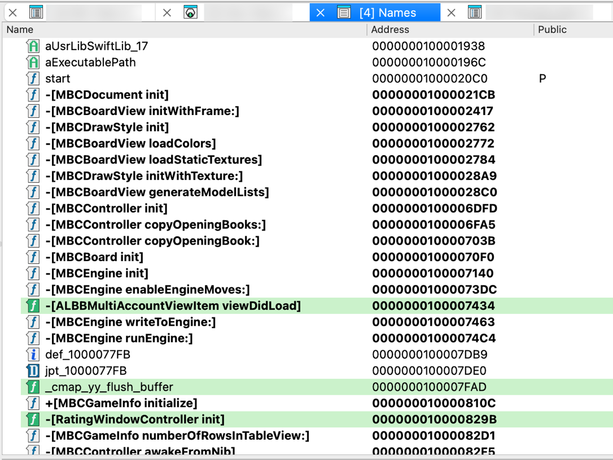
On the left side of the Name column, this view displays a small icon for each name:
| Symbol | Meaning |
|---|---|
L | library function |
𝑓 | regular function |
C | instruction |
A | string literal |
D | data |
I | imported name |
You can use list viewer commands in this window.
Signatures window
This view displays both applied and planned signatures, and allows you to apply new ones.
For each signature, the following columns are shown:
- Name of the file with the signature
- State of the signature:
- Planned: the signature will be applied
- Current: the signature is being applied
- Applied: the signature has been applied
- #func: number of functions found using the signature
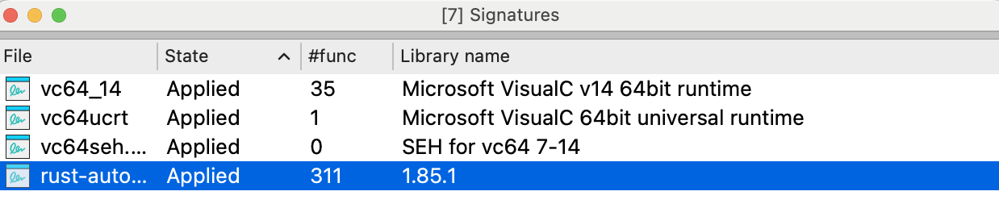
In this view, you can modify the list of planned signatures and add or remove library modules to be used during disassembly. Note that applied signatures cannot be removed from the list.
Add signatures
To add a signature to the list, right-click in the signatures view and click Apply new signature… in the context menu or press Ins. You will see a list of signatures that can be applied to the program being disassembled.
Text version: Not all signature files will be displayed (for example, 32 bit signatures will not be shown for a 16 bit program). If you want to see the full list of signatures, select the first line of the list saying SWITCH TO FULL LIST OF SIGNATURES.
Signature files location / SIG directory
Signature files reside in the subdirectories of the SIG directory. Each processor has its own subdirectory. The name of the subdirectory is equal to the name of the processor module file (z80 for z80.w32, for example). Note: IBM PC signatures are located in the SIG directory itself.
{% hint style=“info” %} The IDASGN environment variable can be used to specify the location of the signatures directory. {% endhint %}
Segments window
This view lists information about memory segments containing code and data.
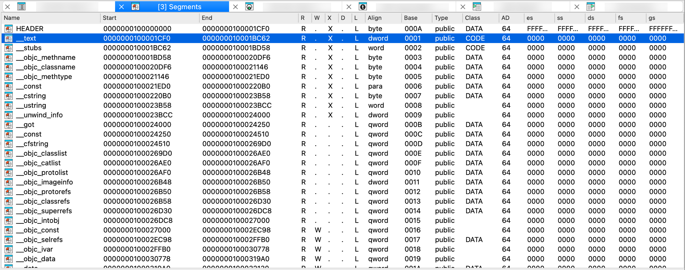
Each segment is represented by a line in the list. Please note that the end address of the segment never belongs to the segment in IDA.
The following columns (segment attributes) are displayed:
| Attribute | Meaning |
|---|---|
| Name | Segment name |
| Start | Virtual start address |
| End | Virtual end address |
| R | R: readable, .: not readable, ?: unknown |
| W | W: writable, .: not writable, ?: unknown |
| X | X: executable, .: not executable, ?: unknown |
| D | D: debugger only, .: regular |
| L | L: created by loader, .: no |
| Align | Segment alignment |
| Base | Segment base selector or address |
| Type | Segment type |
| Class | Segment class — CODE: machine code instructions DATA, CONST: initialized data segment BSS, STACK: uninitialized data segment XTRN: imports |
| AD | Segment addressing width |
The rest of the columns display the default values of the segment registers for the segment.
By default, the cursor is located on the current segment.
You can use list viewer commands in this window.
In order to change the selector values, use selectors window.
Add new segment
To add a new segment to the list, right-click in the Segments view and click Add new segment… in the context menu or press Ins.
Segment registers window
This view contains segment register change points list.
Depending on the current processor type, you will see various segment registers such as DS, ES, SS, and potentially FS and GS.
The Tag column indicates how each change point was created:
a— added automatically by IDA during autoanalysisu— specified by the user or defined by a plugin
a— added automatically by IDA during autoanalysisu— specified by the user or defined by a plugin
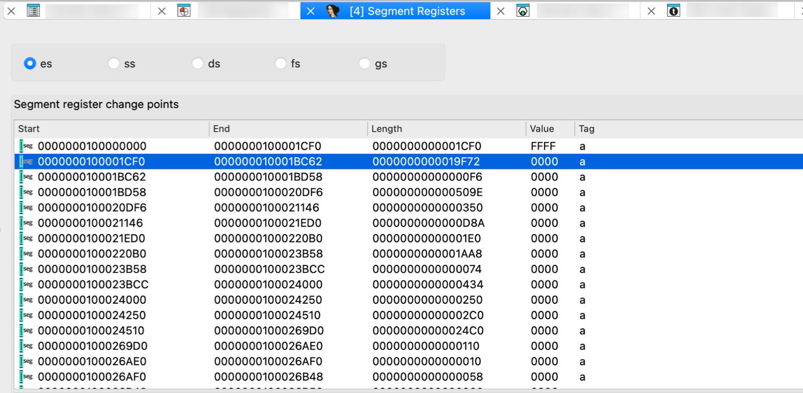
You can use list viewer commands in this window.
Change points essentials
When IDA encounters an instruction which changes a segment register, it creates a segment register change point. So, mostly change points are maintained by IDA itself. IDA assumes that the segment registers do not change their values between change points. If you find out that IDA failed to locate a segment register change, or if you want to change a register value, you can create a change point using the Change segment register value… command (action SetSegmentRegister). You can change the value of a segment register using the Set default segment register value… command too (action SetSegmentRegisterDefault).
IDA generates the appropriate ‘assume’ instructions for the change points if it was not disabled (Options → Assembler directives…)
Related topics
- For additional segment management options, refer to the Edit → Segments submenu.
Selectors window
Here you can change the “selector to base” mapping. The selector table is used to look up the selector values when calculating the addresses that are visible in the disassembly listing.
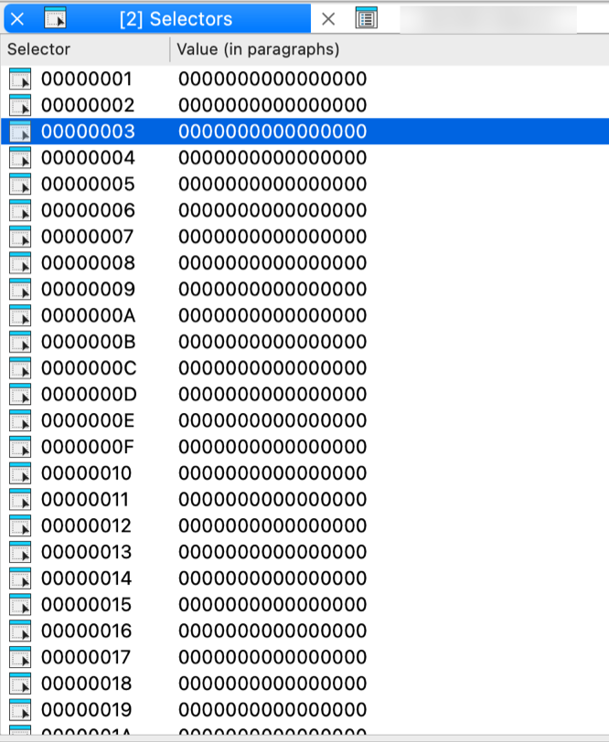
You can use list viewer commands in this window:
- jump to the paragraph pointed by the selector
- add a new selector
- delete selector (if it is not used by any segment)
- change selector value (this leads to reanalysis of all program)
- jump to the paragraph pointed by the selector
- add a new selector
- delete selector (if it is not used by any segment)
- change selector value (this leads to reanalysis of all program)
Cross references window
This view contains all cross references (xrefs) to the current location. You can use list viewer commands in this window.
Cross reference attributes
The cross reference dialog displays a list of references to the various items. Each line has the following attributes:
-
Direction: Up or Down. Meaningful for program address; denotes where the reference comes from, from the lower addresses than the reference target (down) or from higher addresses (up).
-
Type: The following types exist:
| Type | Description |
|---|---|
o | offset, the address of the item is taken |
r | read access |
w | write access |
t | textual referenced (used for manually specified operands) |
i | informational (e.g. a derived class refers to its base class) |
J | far (intersegment) jump |
j | near (intrasegment) jump |
P | far (intersegment) call |
p | near (intrasegment) call |
^ | ordinary flow |
s | xref from a structure |
m | xref from a structure member |
k | xref from a stack variable |
-
Address:
- For ‘xrefs to’ dialogs: where the reference comes from (source)
- For ‘xrefs from’ dialogs: where the reference goes to (destination)
-
Text: Additional info about the cross reference
Add cross reference (1)
To add a new cross reference to the list, right-click in the xrefs view and click Add cross-reference… in the context menu or press Ins.
In the Add Cross Reference dialog, you should specify the From and To address, as well as the xref type.
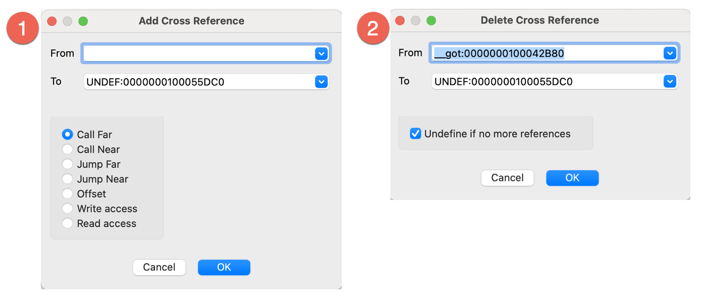
Delete cross reference (2)
To remove a cross reference from the list, right-click in the xrefs view and click Delete cross-reference… in the context menu or press Del. If the Undefine if no more xrefs is checked, then the instruction at the target address will be undefined upon the deletion of the last xref.
{% hint style=“info” %} IDA undefines instructions only if they do not start a function. {% endhint %}
Related topics
- For a comprehensive overview of cross-references in IDA, including both code and data xrefs, refer to Igor’s Tip of the Week #16: Cross-References.
Cross references tree window
The cross references tree view provides a comprehensive, textual view of inter-function code and data relationships. This non-modal widget displays both code and data references in a hierarchical tree format and is designed to complement the Xref Graph. The view shows both references to and from the current function, providing a clear overview of function call hierarchies.
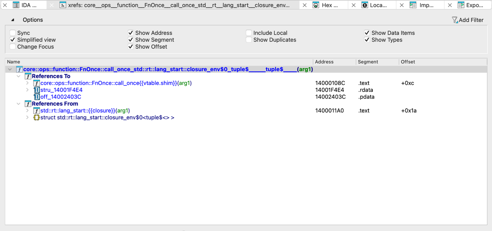
Key features:
- Non-modal/multiple instances: You can open several windows simultaneously, each displaying different functions
- Real-time updates: Nodes update as you navigate through the database
Options
Click Options above the view to expand the available settings. Key options to be aware of:
- Sync: synchronizes the current tree with the IDA View
- Simplified view: when unchecked, displays the full function names, e.g.,
int main(int argc, char **argv) - Allow Duplicates: when checked, shows multiple cross-references to the same function
Function calls window
This view displays an overview of calls to and from the current function:
- All functions who call the current function are displayed at the top section of the window (1)
- All functions called from the current function are displayed at the bottom section of the window (2)
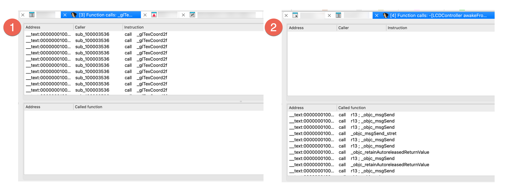
The list is automatically refreshed when the cursor is moved to another function.
Local Types window
{% hint style=“info” %} While working in the Local Types view, the actions available under the Edit, Jump and Search menus may differ from those in other views. For more information, see View-Dependent Menus. {% endhint %}
The Local Types window serves as your central hub for managing custom data types within your IDA database. It allows you to create and edit custom types—such as structures, unions, and enumerations—and import definitions from loaded type libraries.
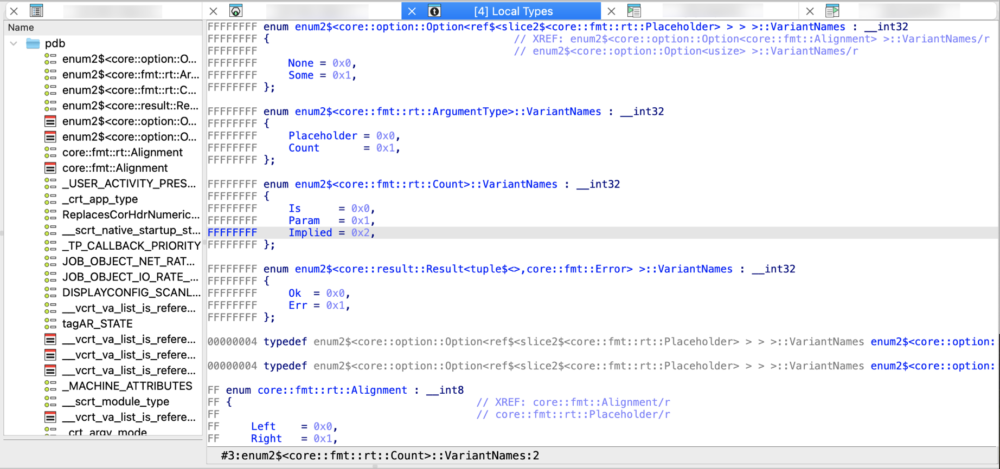
Each database has a local type library embedded into it. This type library (til) is used to store types that are local to the current database. They are usually created by parsing a header file.
{% hint style=“info” %} As of IDA 9.0, the legacy Structure and Enums windows have been removed and their functionality consolidated by the Local types window. This view serves as a centralized place for all type-related actions. {% endhint %}
Local types essentials
In the Local types view, you can directly manage custom data types:
- the existing types can be modified (the default hotkey is Ctrl+E, context menu Edit type…)
- the existing types can be deleted (the default hotkey is Del, context menu Delete type…)
- new types can be added (the default hotkey is Ins, context menu Add type…)
- multiple types can be added at once by parsing declarations (context menu Parse declarations…)
Please note that Ins can be used to add many types at once. For that the user just needs to enter multiple declarations, one after another in the dialog box.
However, Ctrl + E permits for editing of one type at a time. This may cause problems with complex structure types with nested types. Nested types will not be saved by Ctrl + E.
If the edited type corresponds to an idb type (struct or enum), then the corresponding type will be automatically synchronized.
Some types in this list are created automatically by IDA. They are copies of the types defined in the Local Types views. Such types are displayed in gray, as if they are disabled.
Types displayed in black are considered as C level types. Read more.
Each type in the local type library has an ordinal number and may have a name.
Be careful when deleting existing types because if there are references to them, they will be invalidated.
A local type can be mapped to another type. Such an operation deletes the existing type and redirects all its references to the destination type. Circular dependencies are forbidden. In the case of a user mistake, a mapped type can be deleted and recreated with the correct information.
Related topics
Type libraries window
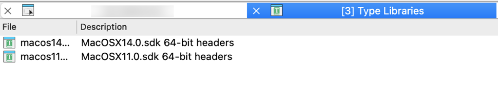
This view displays the currently loaded type libraries and allows you to load or unload them as needed.
The standard type libraries contain type definitions from the standard C header supplied with compilers. Usually, IDA tries to determine the target compiler and its type libraries automatically but if it fails, this window allows you to load the appropriate type library.
Loading/unloading additional libraries
To load new libraries, right-click in the view and click Load type library… in the context menu or press Ins. Analogically, use Unload type library(ies)… to remove it from the list.
Configure compiler and memory model
Don’t forget to specify the compiler and memory model in the compiler setup (Options → Compiler…) dialog box.
Local Types bookmarks
Check Choose marked location help message.
Strings window
The Strings view contains all strings in the program. However, if a range of addresses was selected before opening the window, only the selected range will be examined for strings.
The columns display the following information:
- Address
- Length in bytes
- Type:
Cfor standard 8-bit strings, orC16for Unicode (UTF-16)
- String text
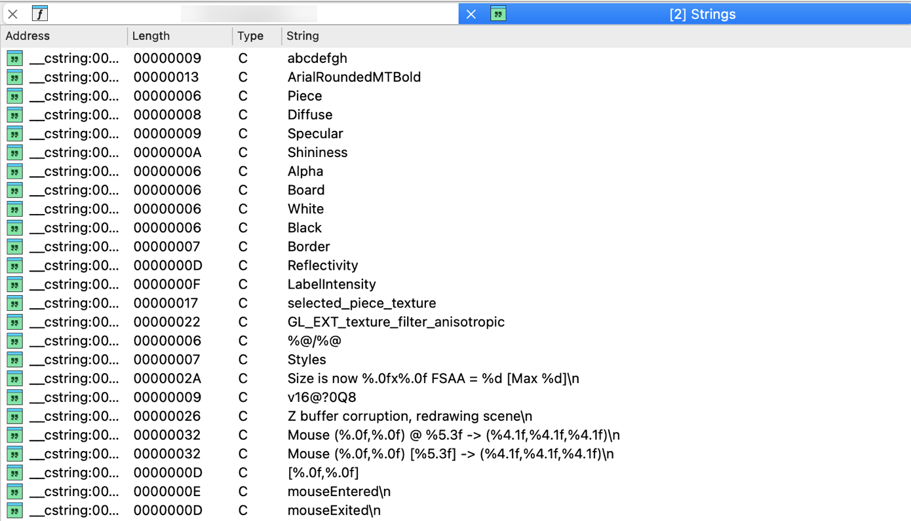
Strings view options
You can set up the list parameters by clicking Setup in the context menu.
The list always contains strings defined in the program, regardless of the settings in this dialog box, but the user can ask IDA to display strings not yet explicitly defined as strings.
The following parameters are available:
Display only defined strings
If checked, IDA will display only strings explicitly marked as string items (using the convert to string (action MakeStrlit) command). In this case, the other checkboxes are ignored.
Ignore instructions/data definitions
If checked, IDA will ignore instruction/data definitions and will try to treat them as strings. If it can build a string with the length greater than the minimal length, the string will be displayed in the list. This setting is ignored if ‘only defined strings’ is on.
Strict ASCII (7-bit) strings
If checked, only strings containing exclusively 7-bit characters (8th bit must be zero) will be added to the list. Please note that the user can specify which characters are accepted in the strings by modifying the StrlitChars parameter in the ida.cfg file. This setting is ignored if ‘only defined strings’ is on.
Allowed string types
Allows the user to specify the string types included in the list. This setting is ignored if ‘only defined strings’ is on.
Minimal string length
The minimal length the string must have to be added to the list.
{% hint style=“info” %} Click Rebuild… from the context menu to refresh the list after changing the options. {% endhint %}
Stack variables window
The Stack view displays local variables and function parameters for the currently analyzed function. It allows you to view, create, edit, and rename stack variables for the current function. To open it:
- Go to Edit → Functions → Stack variables… or press Ctrl + K
- Double-click or press Enter on a stack variable (in the Pseudocode or Disassembly/IDA View).
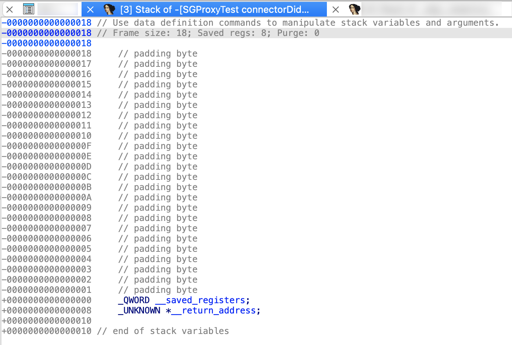
Bookmarks window
This view displays list of all bookmarks and allows you to manage them. In IDA, bookmarks can be placed on any address in the database, so you can use them to quickly find a location.
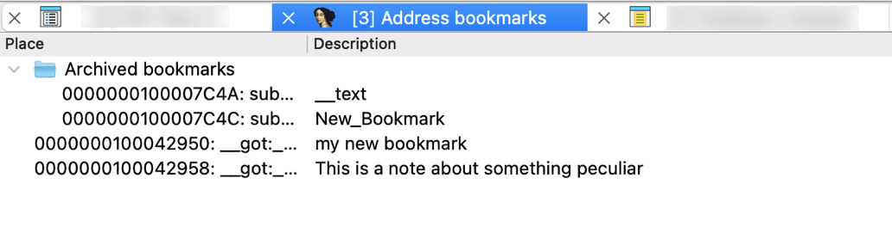
In the IDA View, bookmarks are shown in the arrows panel. The active bookmark is highlighted in celadon and marked with a star icon. Double-clicking an active bookmark will remove it.
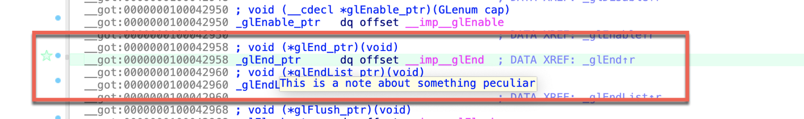
Adding bookmarks
You can add a bookmark to the selected location from Jump → Mark position to every address-based view (IDA View, Hex View and Pseudocode), as well to the Local types view. In the opened dialog, enter the bookmark description and click OK.
Creating folders
To organize your bookmarks into folders, select the chosen bookmarks, right-click in the view and click Create folder with items… in the context menu or press Ins.
Notepad window
The Notepad window is a convenient place to store general notes related to the current database. All notes entered here are automatically saved within the database itself.
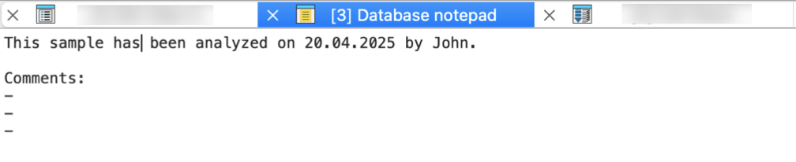
Common shortcuts
- Alt + T search for text
- Ctrl + T repeat the last search
Problems window
The Problems window contains the list of all problems encountered by IDA during disassembling the program. You can jump to a problem by pressing Enter. The selected problem will be deleted from the list.
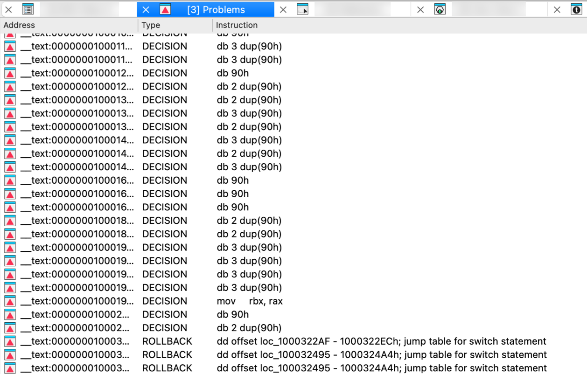
Patched bytes window
The Patched bytes view shows the list of the patched locations in the database. It also allows you to revert modifications selectively.

Reverting changes
Select location(s) and click Revert… from the context menu to revert this modification.
Patching bytes
You can change individual bytes via Edit → Patch program → Change byte….
Navigation history window
This view displays the saved navigation history. When history sharing is enabled (default setting, that can be changed under Options → General → Browser), it shows a shared history stack across multiple views (Disassembly, Pseudocode, Local Types, and Stack). Otherwise, it displays the navigation history for the currently active widget only. The bolded entry indicates the current cursor position.

Enable/disable history sharing
History sharing is enabled by default. You can enable or disable this behavior in Options → General → Browser.
Undo history window
This view shows the history of all undo actions.
Double clicking on a line reverts the database to the state before the corresponding action.
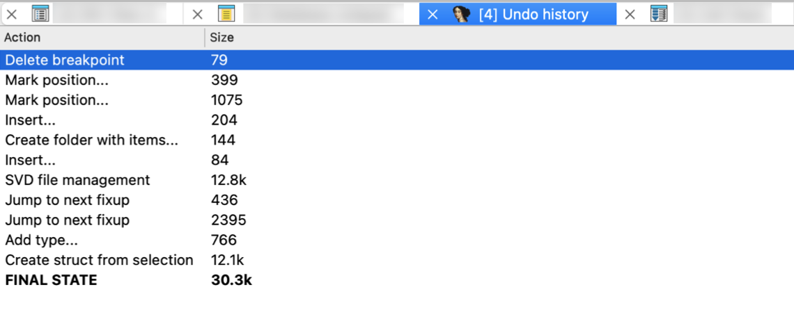
Truncate history
It is possible to truncate the undo history by using the corresponding context menu command Truncate history. The undo information for the selected action will be removed together with the information about all preceding actions.
Style indicators
The redoable user actions are displayed in italics. The current position in the undo buffers is displayed in bold; it usually denotes the first redoable user action.
Microcode window
The Microcode view displays the decompiler’s microcode - an intermediate form that bridges CPU-specific assembly and high-level pseudocode. It shows micro instructions organized into blocks, along with control flow transfers and use-definition chains that track how data flows through the code. You can explore microcode at different maturity levels.
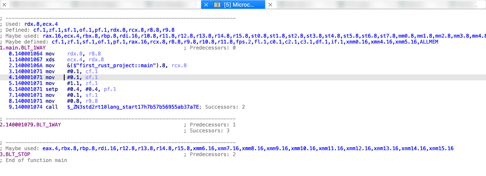
Key features and interaction
- Maturity level: Increase or decrease maturity level using
>and<keys or via the context menu. - Synchronized Views: You can sync currently opened Microcode window with Disassembly, Pseudocode, or other Microcode views via the context menu.